市场摘要
今日核心要点与市场整体情绪研判
核心要点
- A股主要指数低开低走，创业板指跌超5%，但超3200只个股飘红，市场风格延续转换
- 全球AI科技股因Meta计划出租闲置算力消息暴跌，A股算力产业链多只热门股跌停
- 国际油价跌破68美元，地缘风险溢价出清，甲醇期价跌回战前水平
- 宇树科技科创板IPO注册获批，募资42亿元，硬科技领域融资活跃
- 电池新国标落地，新能源板块结构性机会显现
- 万科任命新总裁黄宇，地产板块人事变动引发关注
A股主要指数走低！超3200只A股飘红！市场风格转换延续
 87
87市场全天震荡调整，三大指数低开低走，创业板指跌超5%
 95
95今日开盘：两市双双低开 沪指跌幅1.42%
A股回调，科技股大幅跳水，化工板块逆市走高
Meta计划出租自有闲置AI算力 全球储存芯片概念股暴跌
AI资本开支，突传利好！最强赛道，全线跳水！杀跌逻辑，能否扭转？
算力产业链调整！热门大牛股，集体跌停，什么情况？
国际油价战后首次跌破68美元 回归战前价格水平
证监会同意宇树科技科创板IPO注册申请
上市在即！证监会批复同意宇树科技科创板IPO注册，募资42亿
电池新国标落地，受益股揭秘（附名单）
万科等来新总裁新总裁黄宇曾任深圳市委金融办副主任。13分钟前
万科发布公告，任命黄宇为公司总裁
行业分析
板块动态、市场主题与结构性机会
市场主题
板块分析
新能源
电池新国标落地，受益股受关注；锂盐板块中矿资源维持产销量预期，永和股份业绩预增；华润新能源上市首日市值3115亿元，显示市场对新能源龙头的认可
政策驱动下，电池产业链龙头及技术领先企业受益，但需警惕板块内部分化
半导体
AI硬件板块因Meta消息大幅调整，存储芯片概念股暴跌，但北京君正预计毛利率环比增长，显示基本面分化
短期受情绪冲击，但国产替代和存储涨价逻辑仍支撑部分个股，关注技术突破和市场份额提升
消费
大型啤酒厂商押注迷你罐装啤酒，五粮液借世界杯营销，消费板块呈现结构性创新
消费升级和场景创新驱动细分领域机会，但整体消费数据仍需观察
地产
万科任命新总裁黄宇（曾任深圳市委金融办副主任），市场关注管理层变动对战略的影响
人事变动可能带来战略调整，但行业基本面仍承压，需关注后续政策支持
银行
理财资金滴灌硬科技，股权投资渐入收获期；中小银行改革推进，同业股权扫货热度升温
银行向科技金融转型趋势明确，但资产质量压力仍需关注
医药生物
百诚医药创新药获临床试验批准，医渡科技首次全年盈利，AI医疗落地加速；但商保创新药申报数量减半
创新药和AI医疗是长期主线，但医保控费和商保调整带来短期不确定性
风险评估
主要风险因素、影响程度与应对策略
Meta计划出租自有闲置AI算力 全球储存芯片概念股暴跌
AI资本开支，突传利好！最强赛道，全线跳水！杀跌逻辑，能否扭转？
算力产业链调整！热门大牛股，集体跌停，什么情况？
AI硬件，恐慌来袭？！美股存储芯片、光通信盘前大跌
一则消息，“吓坏”全球AI科技股，发生了什么？
伊朗武装部队：美干涉霍尔木兹海峡将遭回击
国际油价战后首次跌破68美元 回归战前价格水平
美伊谈判现积极进展，油价连续第四周收跌
A股主要指数走低！超3200只A股飘红！市场风格转换延续
87市场全天震荡调整，三大指数低开低走，创业板指跌超5%
95今日开盘：两市双双低开 沪指跌幅1.42%
3万亿元风向标！上半年杠杆资金路线图出炉，两大行业板块领先
商务部回应对美农产品关税问题
事关中欧贸易投资磋商，商务部回应中方已经邀请谢夫乔维奇委员于今年的秋季举行磋商机制的第二次例会。2小时前
长园集团收到证监会预处罚 受损股民可进行预索赔登记
新亚制程财报虚增利润引发索赔，受损投资者维权机会不容错过
司尔特财务造假被罚，索赔窗口持续开启
交大昂立三年两次立案，受损股民维权通道开启
荃银高科虚增业绩面临证监会的处罚，适格股民可索赔损失！
退市离奇涨停？赛隆退曾业绩变脸，如今“栽了”
朗进科技遭监管重罚，受损投资者索赔窗口开启
太和水即将退市，受损投资维权机会不容错过
兴源环境索赔时效仅剩两周，已有维权胜诉还可加入
未名医药信披违法违规收警示函 受损股民可进行预索赔登记
投资建议
可操作的投资机会与防御性策略
投资机会
电池新国标落地，受益股揭秘（附名单）
北京君正：由于公司存储芯片持续在涨价 预计各季度毛利率会环比有所增长
证监会同意宇树科技科创板IPO注册申请
上市在即！证监会批复同意宇树科技科创板IPO注册，募资42亿
沈鼓集团IPO上会在即 深耕高端装备自主化赛道 夯实关键产业运行基础
永和股份：预计上半年净利润同比增长69.51%-102.68%
永和股份：预计上半年净利润为4.6亿元到5.5亿元，同比增长69.51%到102.68%。
A股回调，科技股大幅跳水，化工板块逆市走高
Meta计划出租自有闲置AI算力 全球储存芯片概念股暴跌
AI资本开支，突传利好！最强赛道，全线跳水！杀跌逻辑，能否扭转？
算力产业链调整！热门大牛股，集体跌停，什么情况？
AI硬件，恐慌来袭？！美股存储芯片、光通信盘前大跌
中国神华：定州三期5号机组、沧东三期5号机组通过168小时试运行
晨光生物：拟以8000万元-1.6亿元回购股份，回购股份的价格为不超过人民币12.50元/股。
晨光生物：拟以8000万元至1.6亿元回购股份用于注销
市场展望
前瞻分析、关键催化剂与重点关注指标
短期展望 · 1–3个月
A股短期面临调整压力，AI硬件板块恐慌情绪需消化，但市场风格切换至周期和防御板块，超3200只个股上涨显示结构性机会。创业板指大跌5%后可能技术性反弹，但需关注今晚美国非农数据及世界杯对就业的扰动。
中长期展望 · 6–12个月
中长期看，硬科技（机器人、AI、半导体）仍是主线，电池新国标、体育强国规划等政策提供结构性支撑。香港IPO市场预计回暖，普华永道预测2026年集资额3800亿港元。人民币汇率和大宗商品价格波动需持续跟踪。
关键催化剂
- 今晚美国非农就业数据（沃什时代首份）
- 世界杯赛事对消费和就业的短期影响
- 中欧贸易磋商秋季例会进展
- 电池新国标落地后产业链订单变化
- 宇树科技等硬科技IPO上市表现
重点关注
- 国际油价走势（关注美伊谈判及霍尔木兹海峡局势）
- AI算力产业链库存及资本开支变化
- 中国6月经济数据（GDP、CPI、社融等）
- 港股通资金流向
- 房地产销售及政策放松信号
今晚，沃什时代首份非农出炉，世界杯或营造就业“虚火”
87市场全天震荡调整，三大指数低开低走，创业板指跌超5%
95今日开盘：两市双双低开 沪指跌幅1.42%
A股回调，科技股大幅跳水，化工板块逆市走高
深市最大IPO“首秀”，华润新能源收盘市值3115亿，A股排第47今年新股整体表现优于去年同期，赚钱效应继续拉满。2小时前
事关中欧贸易投资磋商，商务部回应中方已经邀请谢夫乔维奇委员于今年的秋季举行磋商机制的第二次例会。2小时前
电池新国标落地，受益股揭秘（附名单）
证监会同意宇树科技科创板IPO注册申请
上市在即！证监会批复同意宇树科技科创板IPO注册，募资42亿
国际油价战后首次跌破68美元 回归战前价格水平
伊朗武装部队：美干涉霍尔木兹海峡将遭回击
美伊谈判现积极进展，油价连续第四周收跌
3万亿元风向标！上半年杠杆资金路线图出炉，两大行业板块领先
万科等来新总裁新总裁黄宇曾任深圳市委金融办副主任。13分钟前
万科发布公告，任命黄宇为公司总裁
晨光生物：拟以8000万元-1.6亿元回购股份，回购股份的价格为不超过人民币12.50元/股。

研报金选丨每日提炼市场最强音 游资私募都在用每天被上百份研报淹没？《研报金选》= 你的专属 "研报过滤器+投研时间压缩器"！周日-周四，每天3-5篇，1页纸说清主线+预期差！2025-06-20 11:14
万科等来新总裁新总裁黄宇曾任深圳市委金融办副主任。13分钟前
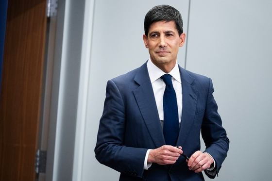
沃什称美国通胀风险下降 缩表或需较长时间
地缘风险溢价出清！甲醇期价跌回开战前
A股主要指数走低！超3200只A股飘红！市场风格转换延续
今晚，沃什时代首份非农出炉，世界杯或营造就业“虚火”
影石创新双摄云台相机在东京涩谷掀抢购潮，目前仍处缺货状态

盘前点金｜研判主题机会 挖掘潜力个股每日盘前，为您抢先捕捉关键讯息（①最新券商观点；②高关注题材；③财经要闻重点；④潜力标的挖掘），助您从容开启交易日！01-07 10:02
卓胜微：起诉村田制作所“恶意提起知识产权诉讼” 索赔500万元
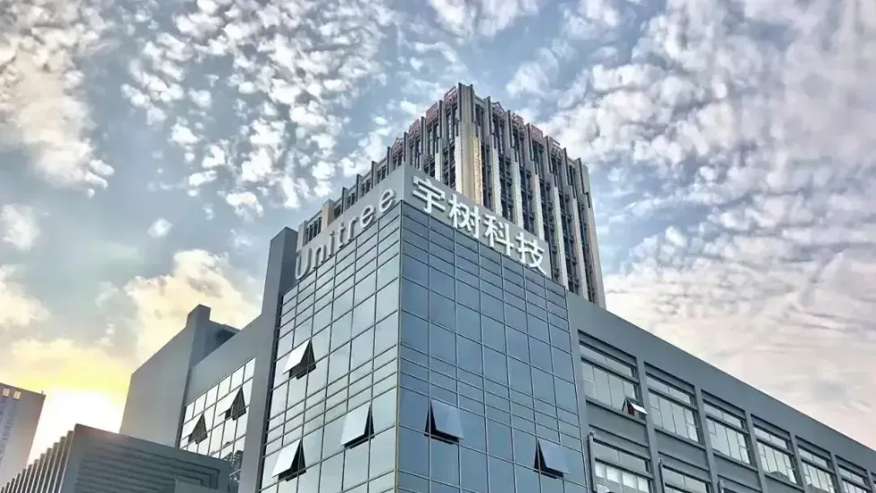
宇树科技IPO注册获批
万科发布公告，任命黄宇为公司总裁
百诚医药：创新药BIOS0629-109片获临床试验批准
剑南春携手凤凰网 强国青年志愿填报名家讲坛苏州站06-12 17:350评
李想回应“理想车主勇救特斯拉司机”
智能经济学：从基本假设到分析范式
AI对经济的双维影响：需求扩张与生产率革命
省市合并，又一枪打响了
沈鼓集团IPO上会在即 深耕高端装备自主化赛道 夯实关键产业运行基础
伊朗武装部队：美干涉霍尔木兹海峡将遭回击
联亚药业创业板IPO定于7月9日上会
大型啤酒厂商押注迷你罐装啤酒
益生股份两连板！这一概念逆市大涨！ST股掀涨停潮
中国神华：定州三期5号机组、沧东三期5号机组通过168小时试运行
四部门延续实施失业保险稳岗扩岗政策举措
Meta计划出租自有闲置AI算力 全球储存芯片概念股暴跌
AI资本开支，突传利好！最强赛道，全线跳水！杀跌逻辑，能否扭转？
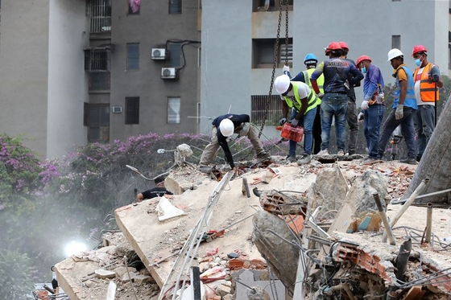
委内瑞拉地震巨大伤亡背后：少见"双强震"、松软地基与脆弱的建筑
电池新国标落地，受益股揭秘（附名单）
乌称基辅遭袭已致18死
AI版支付宝开放公测 上线72项办事技能
自然资源部：日菲双边划界构成国际不法行为，中国有权追责
算力产业链调整！热门大牛股，集体跌停，什么情况？
姚明站台，《奔流》从上海奔进纽约——中美两座城在彭博总部聊开了《奔流》第三季纽约论坛在彭博总部举行。1小时前
辽宁：到2030年海洋生产总值达到8000亿元
国际油价战后首次跌破68美元 回归战前价格水平
联想高管：算力没有过剩
最大回撤30%后，黄金的“下半场”悬念丛生回调近30%后，金价能否迎来反击？下半年多空博弈进入关键期1小时前
长园集团收到证监会预处罚 受损股民可进行预索赔登记
董事会要学宋仁宗，不失位，不越位：企业危机管理（五）
10分钟！直线涨停，封单超12万手！业绩利好，引爆这些A股
中科江南：助力烟台落地山东首笔小微企业增信会计数据标准授信贷款

2025网易经济学家年会夏季论坛
投资“再失速”，开始还是尾声
武汉霸王茶姬“0元购”产生数万杯订单，回应：取消异常订单，致歉并补偿兑换券
证监会同意宇树科技科创板IPO注册申请
图灵量子与海光信息联合发布量子加密分布式存储方案
永和股份：预计上半年净利润同比增长69.51%-102.68%
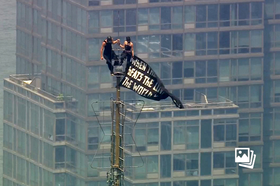
俄罗斯情侣徒手爬上纽约帝国大厦塔尖 悬挂横幅高空求婚
美的集团：累计回购A股股份金额约54.76亿元
龙宇股份（603003）股民索赔再提交法院立案，中装建设（002822）索赔案再获得法院立案
上市在即！证监会批复同意宇树科技科创板IPO注册，募资42亿
新亚制程财报虚增利润引发索赔，受损投资者维权机会不容错过
四年一度的刚性情绪大戏，五粮液如何借世界杯“踢出”新局06-18 10:35
许家印别墅被占，夏海钧加州沙滩，恒大高管结局大不同

股市内参：总比别人领先一步
Meta出租算力类似以旧养新 而不是停止追逐高端算力

公告臻选｜捕捉每日公告中的“黄金机会”告别信息过载，把握市场先机，捕捉每天公告中的“黄金机会”。2025-11-03 14:49
定增市场迎来明显变化！单一大股东认购项目“降温”
普华永道预计2026年香港IPO融资额将达到3800亿港元。
AI硬件，恐慌来袭？！美股存储芯片、光通信盘前大跌
AI究竟是福是祸？全球顶级经济学家激辩：风险不可忽视
先导基电：筹划对先导微电子增资以实现对标的公司控制相关事项能否实施及完成存在不确定性
赛诺菲中国创新与运营中心成都新址启用
赴日航班量腰斩，中国游客连续六个月下滑6月中国大陆赴日本共有1488个航班取消，25条中日航线取消全部航班。39分钟前

砺剑半载，荣耀绽放！第二届长城证券“烽火杯”私募诚选半年度管理人名单揭晓
中矿资源：预计公司全年锂盐产销量不会因全资子公司临时停产检修受到重大不利影响
司尔特财务造假被罚，索赔窗口持续开启
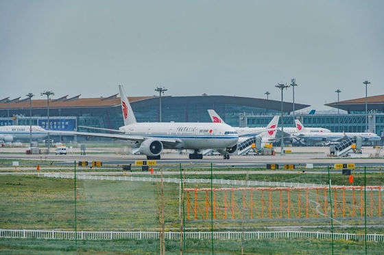
航空燃油附加费再下调：800公里（含）以上降50元、800公里以下降30元
交大昂立三年两次立案，受损股民维权通道开启
“翻倍基”全面爆发 卡位科技投资各显神通

2026网易经济学家年会
神州数码：中标中国移动PC服务器项目，合计109.4亿元
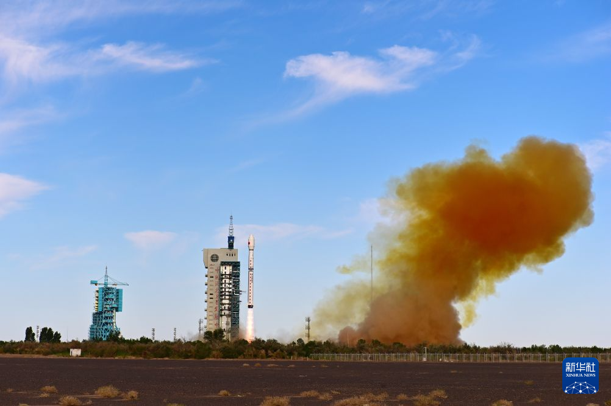
我国成功发射海洋二号E卫星
商飞携C909亮相哈萨克斯坦展览会
中国五矿中国三冶集团原董事长赵广利接受审查调查
专访英国商贸大臣凯尔——“严肃的接触回归了”
中上协独董委年度工作会议暨独董制度改革三周年座谈会在济南召开
诺德基金周建胜：AI硬件板块基本面呈分化上行格局
07-02 08:10李蕴奇理财资金滴灌硬科技 股权投资渐入收获期理财资金滴灌硬科技 股权投资渐入收获期依托科技金融政策导向，理财公司加大硬科技领域股权投资布局，赋能科创企业发展。
美团7月起为全国骑手缴费参保
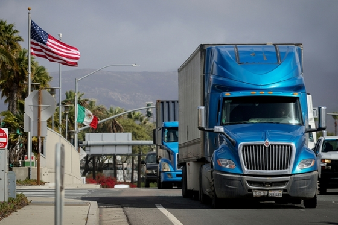
美国拒绝续签美墨加贸易协定 称三国磋商将继续
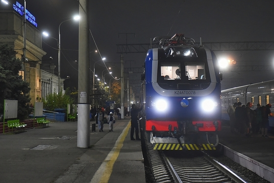
哈萨克斯坦国有铁路公司KTZ申请香港上市 融资增建中哈跨境路线
王喆：资本投入上升，中国新经济指数创近15个月高点
荃银高科虚增业绩面临证监会的处罚，适格股民可索赔损失！
英国国债在美国就业数据公布前下跌，10年收益率上行5个基点至4.81%。
市场全天震荡调整，三大指数低开低走，创业板指跌超5%
国务院批复《体育强国建设“十五五”规划》
直线拉升！江化微，“地天板”，再创新高！

凤凰鉴保官 | “好医保”评测04-29 22:060评
记者手记丨中国供应链如何助力欧洲应对热浪炙烤
祥源新材：生产的用于机器人压阻传感器和压电传感器的压阻发泡材料、压电发泡材料尚处于送样验证阶段
香奈儿收购法国百年老牌衬衫制造商夏尔维
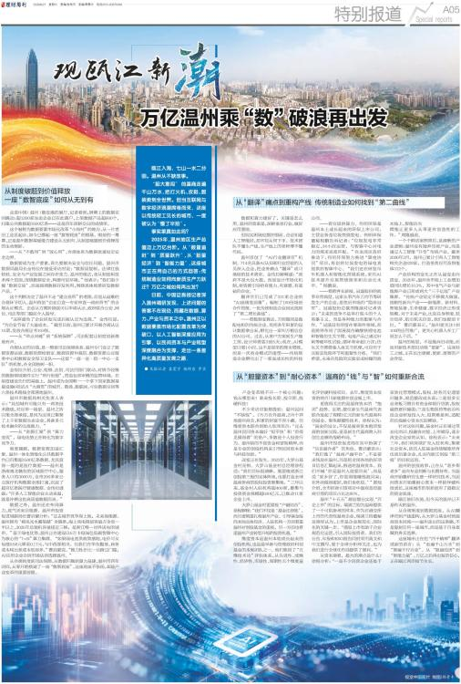
观瓯江新潮 万亿温州乘“数”破浪再出发
今日开盘：两市双双低开 沪指跌幅1.42%
《封面》对话|猎豹移动傅盛：经验不值钱了，但年轻人正在崛起丨（完整版）07-02 17:520评
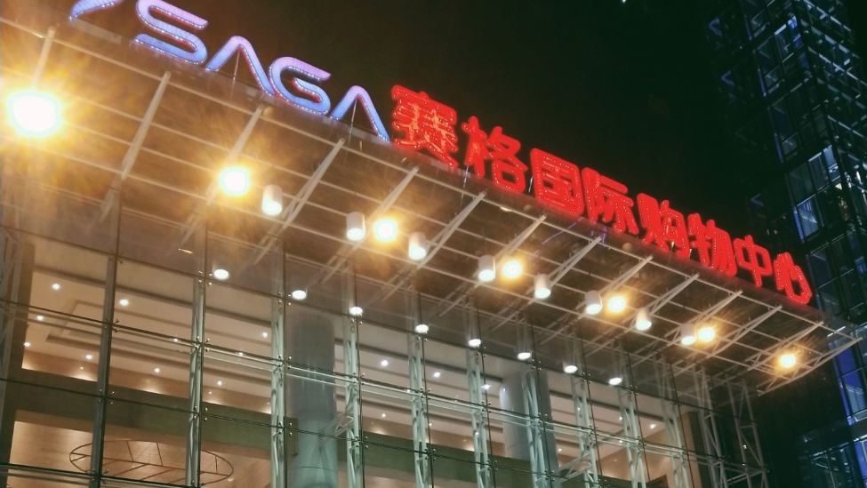
风暴眼丨西安赛格坠楼事件：网传商户生前发长文，涉千万罚单
一汽奥迪频繁换帅背后：渠道与电动化困局待解
理财公司REITs投资调研：从“打新增厚”到全链条配置

菊乐股份即将上会审议 募资必要性遭质疑
A股回调，科技股大幅跳水，化工板块逆市走高
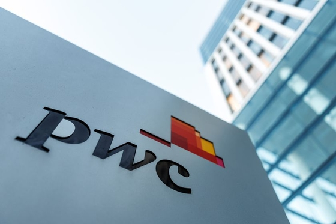
普华永道料今年香港新股集资额达3800亿港元 下半年市况不明朗
2连板美诺华：高端口服固体制剂和复杂注射剂全球化产业基地项目等后续工作尚需较长时间存在较大不确定性
代表作累计回报超8倍 广发基金李巍即将发售新产品
商务部回应对美农产品关税问题
诺德基金周建胜：重点跟踪科技企业的技术突破与市场份额提升
德邦基金：党建引领根本方向 常态化推进高质量发展
国家能源局召开深层煤层气勘探开发专题会议
奥吉娜药业通过40家企业虚开1.89亿元发票，被罚3516万元阿司匹林肠溶片失去公立医院销售资格。1小时前
晨光生物：拟以8000万元至1.6亿元回购股份用于注销
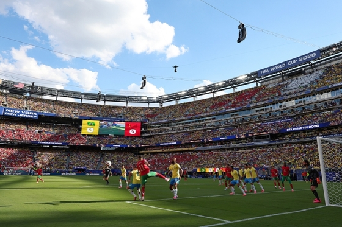
T早报｜央视称世界杯受众规模已达9.31亿人；马斯克否认SpaceX将推出AI硬件；PlayStation将停止推出新游戏实体光盘
美伊谈判现积极进展，油价连续第四周收跌

2025网易新能量 乳制品行业评选
“师傅停止下雨”登上热搜背后：汽车智能语音为何状况百出状况频出的智能语音。44分钟前
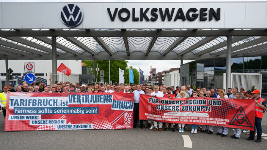
大众汽车将就史上最大规模裁员降本计划迎来董事会激烈博弈
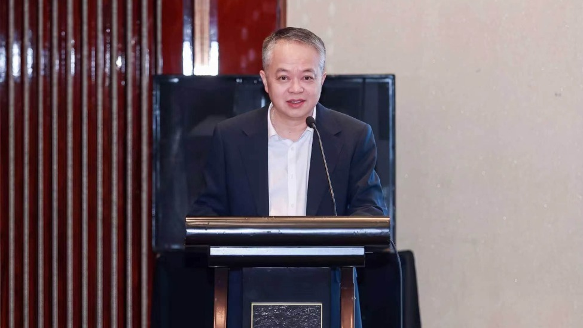
水井坊召开2025年度股东会：坚持价值深耕，聚焦高质量发展06-30 15:370评
索迪斯营收大幅增长、上调业绩预期，股价应声上涨
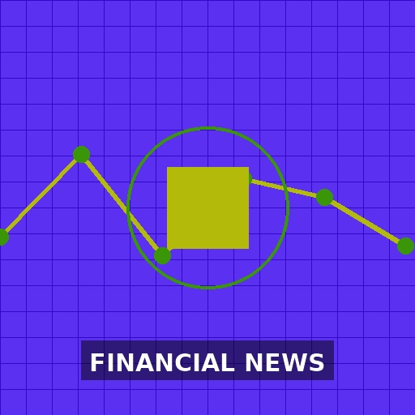
恒信东方索赔持续征集，符合要求还可登记
退市离奇涨停？赛隆退曾业绩变脸，如今“栽了”
朗进科技遭监管重罚，受损投资者索赔窗口开启
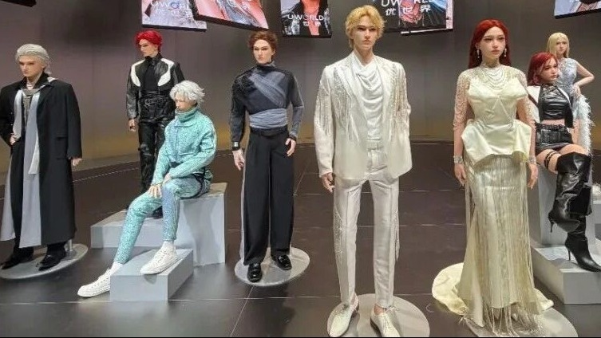
99万性感机器人卖爆，网友：拉了坨大的
智云股份（300097）投资者索赔再获得法院立案，前期已有胜诉
国家能源局：大力推进深层煤层气勘探开发
英伟达，重大宣布！推出全新AI基础设施合作模式
美国“不续”也不退美墨加协定，如何影响北美贸易投资？上述决定并不代表其选择“退出”美墨加协定，但却意味着三国将在未来十年内每年举行联合审查。1小时前
从FOF视角看2026下半年大类资产配置06-30 18:300评
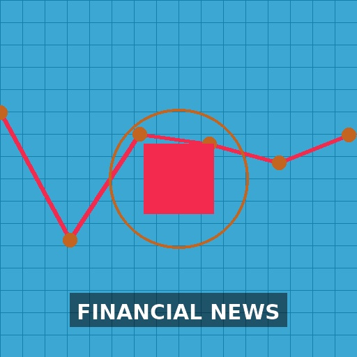
广发证券：Meta当前算力可能仍受限 至少不存在闲置算力
津药药业：收到关于二丙酸倍他米松的DMF FA Letter 助力国际市场开拓
康欣新材：公司业绩已连续四年亏损，未来仍可能面临业绩持续亏损风险
深市最大IPO“首秀”，华润新能源收盘市值3115亿，A股排第47今年新股整体表现优于去年同期，赚钱效应继续拉满。2小时前
太和水即将退市，受损投资维权机会不容错过
连板股追踪丨A股今日共159只个股涨停 这只创新药股4连板六氟化钨概念和远气体2连板。一图速览今日连板股>>1小时前
兴源环境索赔时效仅剩两周，已有维权胜诉还可加入
军工板块市场行情低迷，坦克制造商KNDS推迟IPO计划
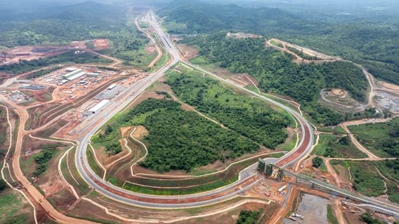
西芒杜掠影⑥：保护生物多样性与周边社区｜出海·现场
同业股权扫货热度升温 中小银行改革成重要推手
数据复盘丨轮毂电机、稀土永磁等概念走强
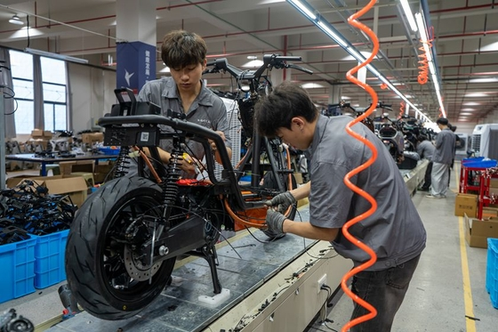
6月财新中国新经济指数升至34.1 资本投入上升带动明显
赴日航班量腰斩，中国游客连续六个月下滑07-02 18:190评
事关中欧贸易投资磋商，商务部回应中方已经邀请谢夫乔维奇委员于今年的秋季举行磋商机制的第二次例会。2小时前
辽宁：建设世界级高端船舶与海工装备制造基地
医渡科技首次全年盈利，中试基地成AI医疗重要落地场景目前，AI在医、药、险、患等多个场景中的价值进一步释放，AI的能力正从项目交付走向平台化、产品化和规模化复制。42分钟前
一则消息，“吓坏”全球AI科技股，发生了什么？
永和股份：预计上半年净利润为4.6亿元到5.5亿元，同比增长69.51%到102.68%。
3万亿元风向标！上半年杠杆资金路线图出炉，两大行业板块领先
未名医药信披违法违规收警示函 受损股民可进行预索赔登记
商保创新药申报数量减半 7款药品转战基本医保(含视频)
私盖公章、代客炒股、违规卖私募！两家券商营业部被点名
北京君正：由于公司存储芯片持续在涨价 预计各季度毛利率会环比有所增长